佛跳墙
佛跳墙是福州特色菜中当之无愧的帝王！佛跳墙起源于福州，佛跳墙的原料很多，有十几种，里面含有鲍鱼、海参、鱼唇、牦牛皮胶、杏鲍菇、蹄筋、花菇、墨鱼、瑶柱、鹌鹑蛋等。要充分体现每一种食材的口味和特点需要先将这十几种食材分别独立制作成一道菜，再汇聚到一起，加入高汤和绍兴酒，文火煨制十几个小时以上，这种味道才能真正达到醇厚的特点。
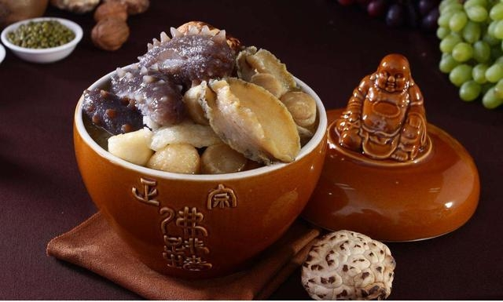
佛跳墙
佛跳墙是福州特色菜中当之无愧的帝王！佛跳墙起源于福州，佛跳墙的原料很多，有十几种，里面含有鲍鱼、海参、鱼唇、牦牛皮胶、杏鲍菇、蹄筋、花菇、墨鱼、瑶柱、鹌鹑蛋等。要充分体现每一种食材的口味和特点需要先将这十几种食材分别独立制作成一道菜，再汇聚到一起，加入高汤和绍兴酒，文火煨制十几个小时以上，这种味道才能真正达到醇厚的特点。
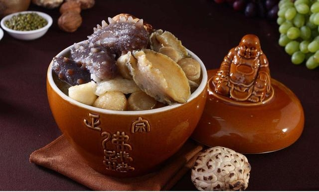
福州肉燕
肉燕又称太平燕，是福建福州的一道著名的特色风味小吃，看起来像是普通的扁食皮，但是他不是普通的面粉做的，而是肉和地瓜粉做的。肉燕也是福州风俗中的喜庆名菜。福州人逢年过节，婚丧喜庆，亲友聚别，必吃“太平燕”，即取其“太平”、“平安”之吉利，故“无燕不成宴，无燕不成年”。肉燕亦由此成为馈赠佳品，为福州人包括海外乡亲所衷情。这个是别的地方吃不到的，算是福州特色小吃，到福州必吃小吃。
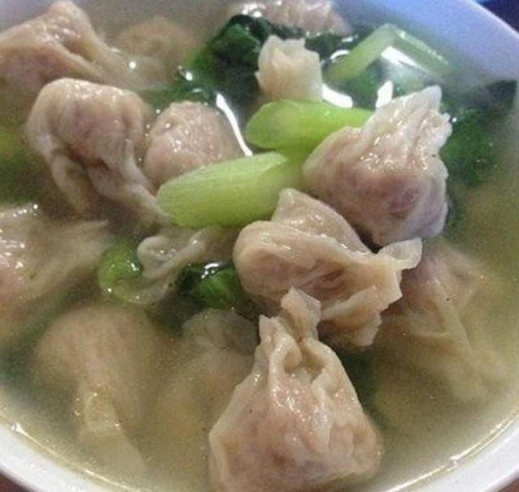
福州鱼丸
福州肉燕是相当出名的，它还有个黄金搭档”——福州鱼丸，福州鱼丸也是福州地方特色的小吃之一。具有天然、营养、保健的美食特色，鱼肉当成泥当鱼丸皮，里面包肉馅，口感好，吃起来非常筋力，它不像超市卖的那种吃起来都是淀粉，这种鱼丸久煮不变质，松涨率好，色泽洁白玲珑晶亮，质嫩滑润清脆，富有弹性，味道鲜美，具有特殊的海鲜风味。
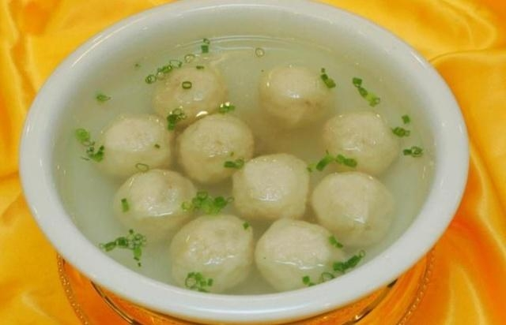
福州捞化
福州“捞化”有点像是捞米粉，那米粉是原产莆田的“兴化米粉”，很细很细的细米粉，一捞就熟，福州“捞兴化”，后顺口简称“捞化”。捞化荤香诱人，冬日食之，大快朵颐之余，舒筋活血，寒气尽去。
不过不一样的是，福州必吃的是猪血化 ，以猪骨、猪血加入豆瓣酱熬汤，汤色浓而不浊，加一份米粉，滋味浓郁还管饱，是旧时贩夫走卒的最爱。老福州更钟情于碗猪血化。
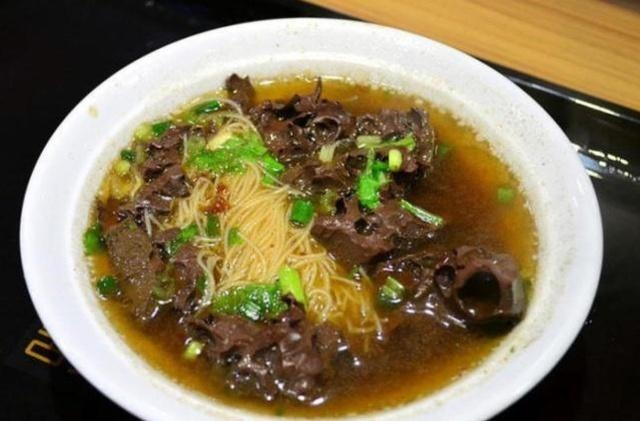
芋泥
芋泥也叫芋茸，是福建省闽菜中的传统甜食之一，以芋头煮熟捣烂加红枣、樱桃、瓜子仁、冬瓜糖、白糖、桂花和熟猪油等辅料制成。福建闽东地区有做芋泥的习俗。芋泥常作为福州宴席上的压轴甜点推出。其中又以福鼎出产的福鼎槟榔芋做芋泥最为地道。芋泥的盛名与其选材密切相关。八宝芋泥选材自福建名牌农产品福鼎槟榔芋。福鼎芋以其个大、质松、味香而闻名，是制作闽菜太极芋泥，八宝芋泥等之上品。
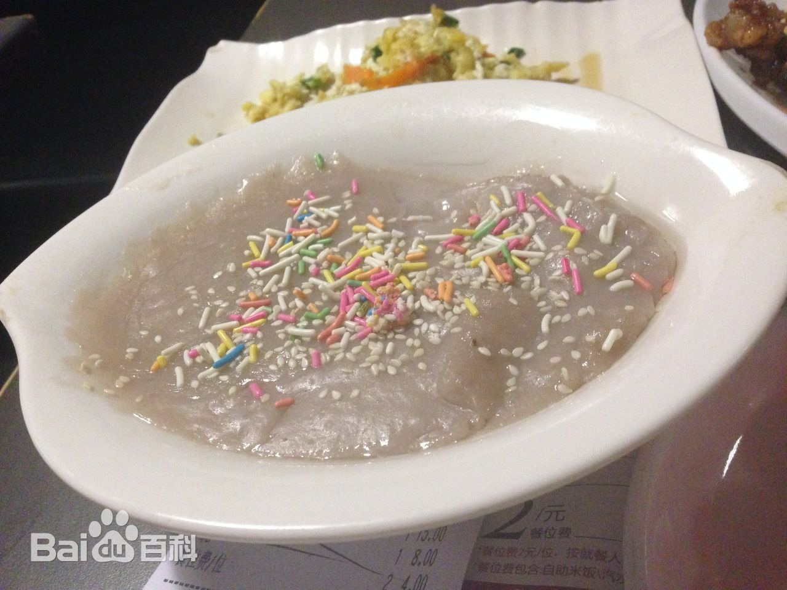
鼎边糊
鼎边糊，又称锅边糊、鼎边垂，福建省特色著名佳点，风味小吃。福州锅边糊，一般与海蛎饼、虾酥、芋粿、油条、生煎包等配食，为当地早点佳品。其一直流传到海南、台湾等地。凡在福建生长或长期客居福建的人无不爱吃。离乡旅居海外的福建人在异国他乡一听见“鼎边糊”、“锅边糊”、“鼎边垂”三个词语，也会感到好象亲眼看到了家乡的“倩影”，成为恋祖爱乡的风味小吃。
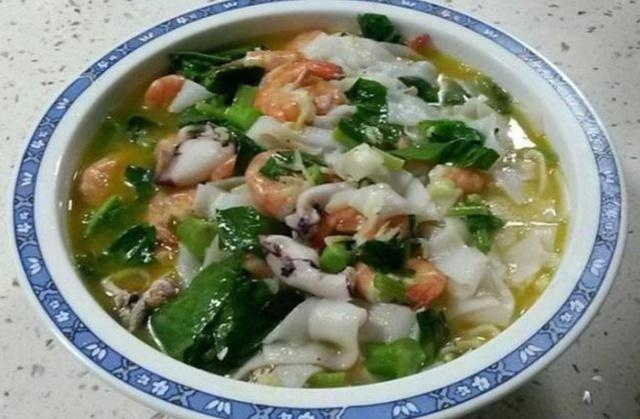
荔枝肉
荔枝肉是福建省福州市、莆田市等地的一道特色传统名菜，属于闽菜系；该菜品已有二三百年历史。因原料中有白色的荸荠和切成十字花刀的猪肉，烹调后因外形型似荔枝而得名。 制法是将猪瘦肉剞上十字花刀，切成斜形块，因剞的深度、宽度均匀恰当，炸后卷缩成荔枝形，佐以红糟、香醋、白糖、酱油、麻油、湿淀粉等调料即成。
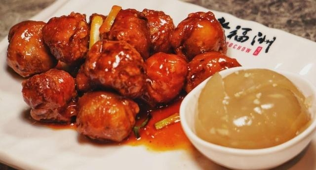
淡糟香螺片
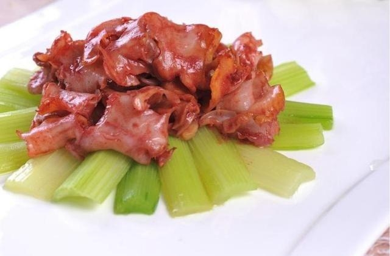
鸡茸鱼唇
鸡茸鱼唇是福建福州特色传统名菜，属于闽菜系。鱼唇是海产中的珍品，不是鱼的嘴唇，而是鱼皮，用绍兴酒腌醉，做成鸡茸汤，放入鱼唇烘烩，撒上火腿末即成。鸡茸鱼唇色泽雪白，鱼唇软糯，富有胶质，鸡茸香醇，味鲜爽口，是高级宴席中必备的大菜。
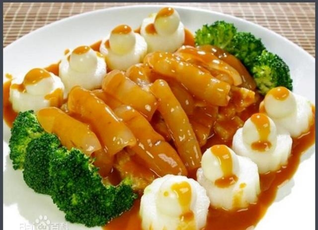
马尾船政格致园
福州的光饼分很多种，不同地区的光饼不一样；福州光饼没有芝麻，福清的光饼有芝麻，据说最传统的光饼是福清光饼，永泰光饼、建瓯光饼的都有陷。说什么说最传统，因为光饼是历史上戚继光的光饼！以前苦逼的军旅生活明显不适合行军打仗时携带，因为有陷的饼容易变质，不容易长期存放。
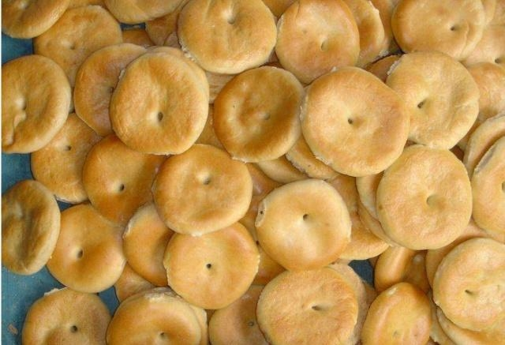